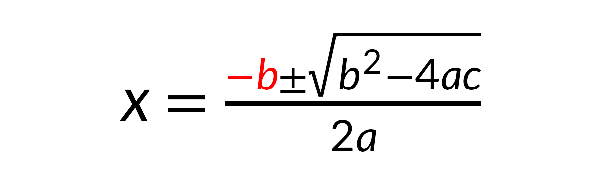
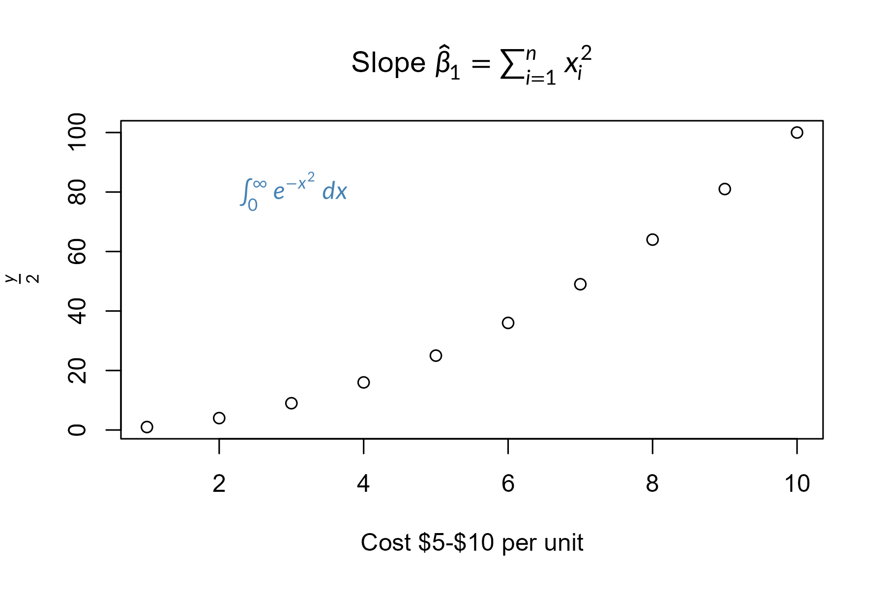
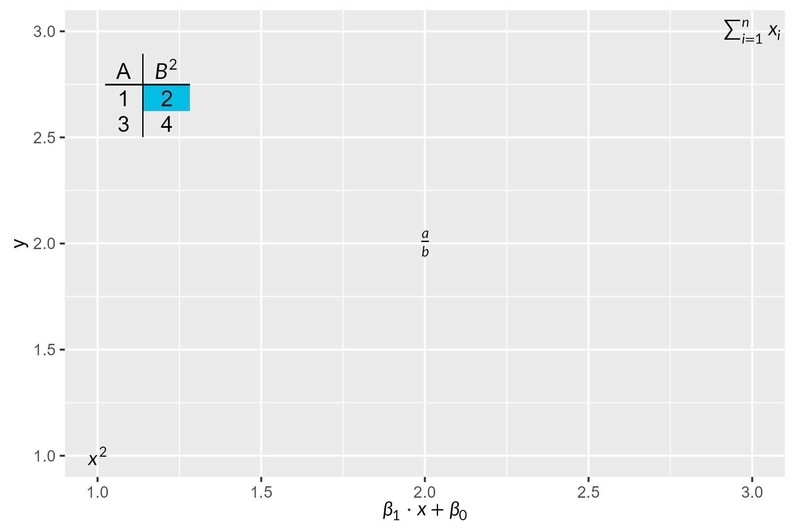

LaTeX math and markdown for R graphics: grid, base plots and ggplot2. No LaTeX installation needed. Built on the MicroTeX layout engine.
Installation
install.packages("gridmicrotex")
# Development version
# install.packages("devtools")
devtools::install_github("adayim/gridmicrotex")grid
library(gridmicrotex)
library(grid)
grid.newpage()
grid.latex(r"($x = \frac{\textcolor{red}{-b} \pm \sqrt{b^2 - 4ac}}{2a}$)",
gp = gpar(fontsize = 30))
Text and math mix as in LaTeX, with math between $...$. Use input_mode = "math" for a bare formula, or input_mode = "document" for paragraphs, headings and displayed equations. latex_grob() returns the grob instead of drawing it.
Base graphics
latex_options(device_math = TRUE)
plot(1:10, (1:10)^2,
main = r"(Slope $\hat{\beta}_1 = \sum_{i=1}^{n} x_i^2$)",
xlab = "Cost $5-$10 per unit", # no math, drawn as written
ylab = r"($\frac{y}{2}$)")
text(3, 80, r"($\int_0^\infty e^{-x^2}\,dx$)", col = "steelblue")
With device_math = TRUE, any label containing math is typeset: titles, axis labels, text(), legend(), and labels in lattice and ggplot2 plots too.
ggplot2
library(ggplot2)
tab <- r"(\begin{tabular}{c|c} A & $B^2$ \\ \hline 1 & \cellcolor{#00bde5}2 \\ 3 & 4 \end{tabular})"
df <- data.frame(x = 1:3, y = 1:3,
eq = c("$x^2$", r"($\frac{a}{b}$)", r"($\sum_{i=1}^n x_i$)"))
ggplot(df, aes(x, y, label = eq)) +
geom_latex() +
annotate("latex", x = 1.15, y = 2.7, label = tab, size = 12) +
labs(x = r"($\beta_1 \cdot x + \beta_0$)") +
theme(axis.title.x = element_latex())
Markdown
grid.newpage()
grid.markdown(r"(The **fitted** slope is $\hat{\beta}_1 = 0.42$ (*p* < 0.001).)",
x = 0.02, hjust = 0, gp = gpar(fontsize = 20))markdown_box_grob() lays out whole documents: headings, lists, code, tables and images. geom_markdown() and element_markdown() bring markdown labels to ggplot2.
Fonts and devices
Lete Sans Math (the default) and STIX Two Math (math_font = "stix") are included; load_math_font() adds others.
If the default device on Windows or macOS warns font family not found, use ragg, svglite or cairo_pdf() (in knitr: knitr::opts_chunk$set(dev = "ragg_png")), or set render_mode = "path" to draw glyphs as outlines.
Comparison
| Approach | LaTeX required? | Device independent? | Math coverage | Markdown |
|---|---|---|---|---|
tikzDevice |
Yes | No | Full | No |
xdvir |
Yes | No | Full | No |
latexpdf |
Yes | No | Full (tables) | No |
latex2exp |
No | Yes | Limited | No |
plotmath |
No | Yes | Limited | No |
gridtext |
No | Yes | None | Yes |
marquee |
No | Yes | None | Yes |
| gridmicrotex | No | Yes | Broad | Yes |
Disclaimer
A note on development: This package was developed as a proof of concept for AI-assisted package creation. I designed the architecture and specification, and the core C++ integration (via MicroTeX) was largely facilitated by AI, with my review and oversight of the design and final outputs. I am sharing it because it works, and I hope that others will find it useful. Contributions, bug reports and improvements from the community are very welcome.